00:00:00:00 · grafika / motion / AI
Stavím si nástroje, které dělají vizuály rychleji. Výsledek pořád hlídám okem.
Dělám grafiku a motion design a programuju si k tomu vlastní produkční nástroje. Z toho vzniklo přes 100 publikovaných krátkých videí a vizuály pro vlastní hru.
Podívat se na koncept pro Digitoo00:00:12:00 · 01 · Social media, motion, digital
„Ctrl+C, Ctrl+V není kariéra.“
Poctivě: tohle je můj neoficiální koncept, ne zakázka. Digitoo ho nezadalo ani neschválilo. Čísla jsem převzal z digitoo.ai, doklady jsou smyšlené a logo je jen sázený text.
Účetní software obvykle mluví o efektivitě. Já bych mluvil o tom, co účetní opravdu štve: o přepisování. Kampaň je drzá k rutině, ne k účetním.
Celý systém stojí na jednom prvku. Rohové závorky ukazují, jak se AI „zamkne“ na údaj z faktury, a stejný prvek funguje v příspěvku, ve videu i na landing page.
LinkedIn kampaň: 5 příspěvků
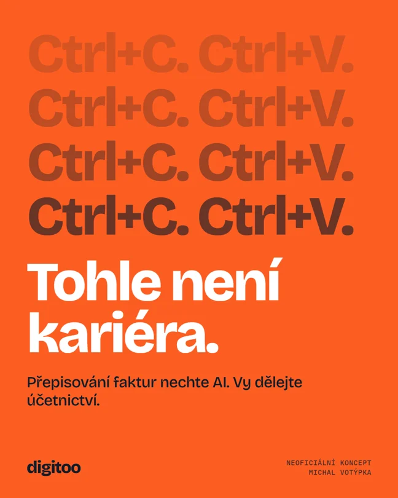
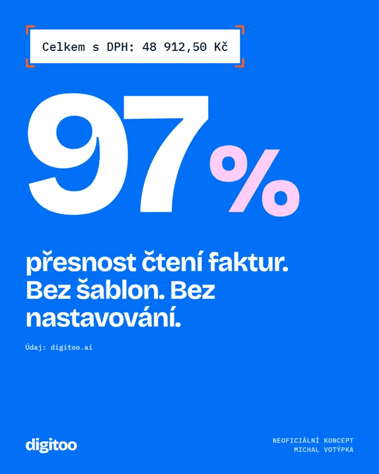
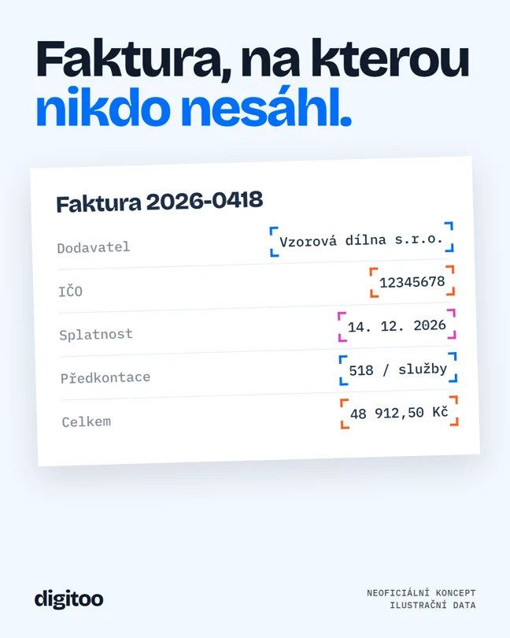
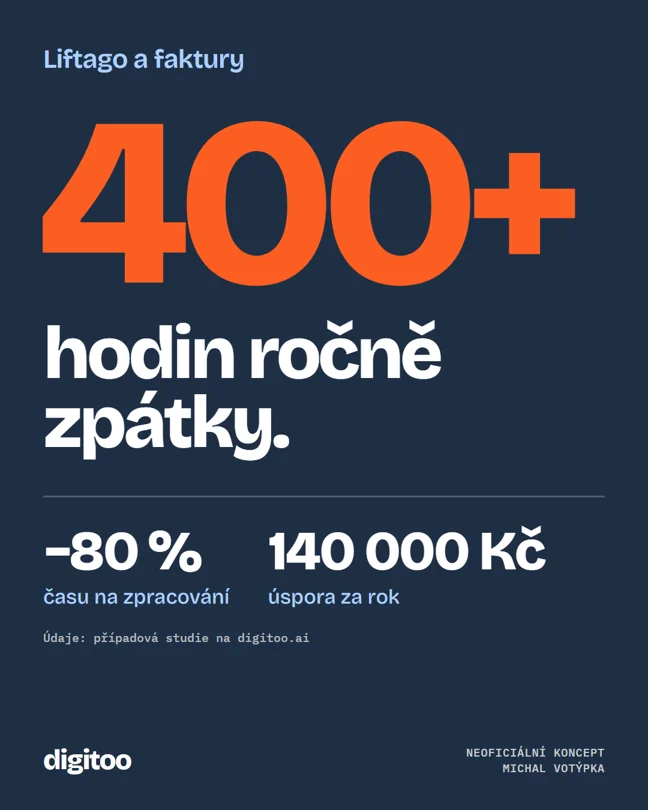
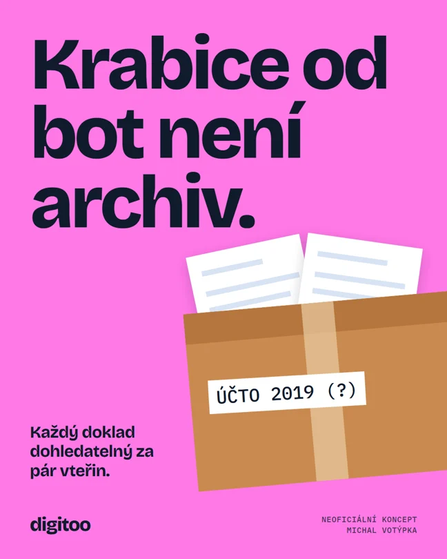
Karusel: linka běží přes všech 5 slidů
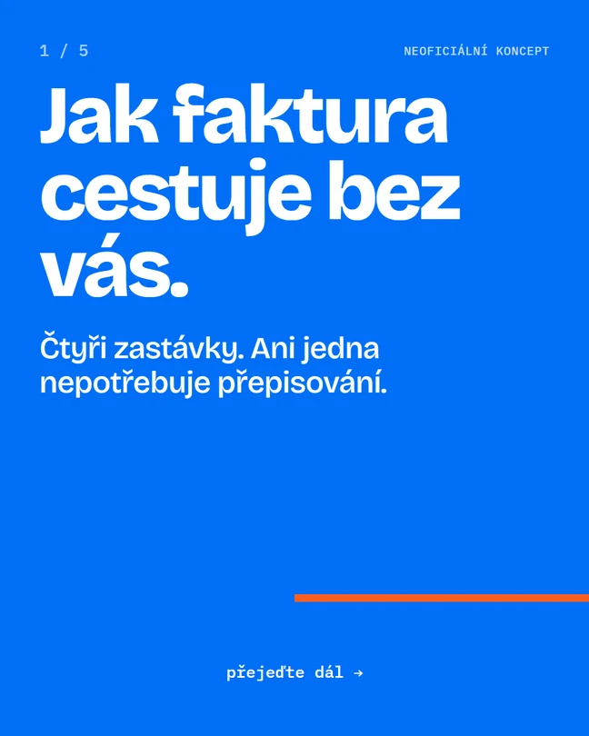
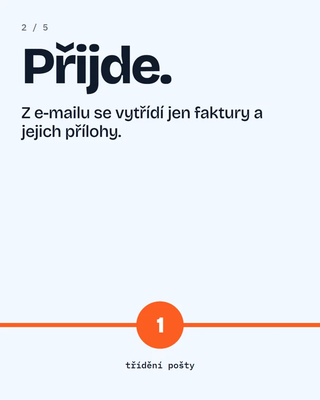
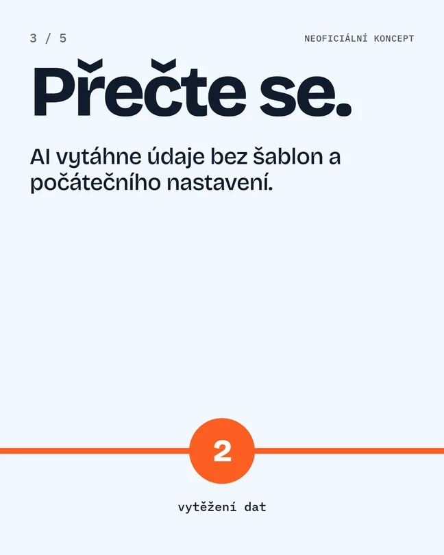
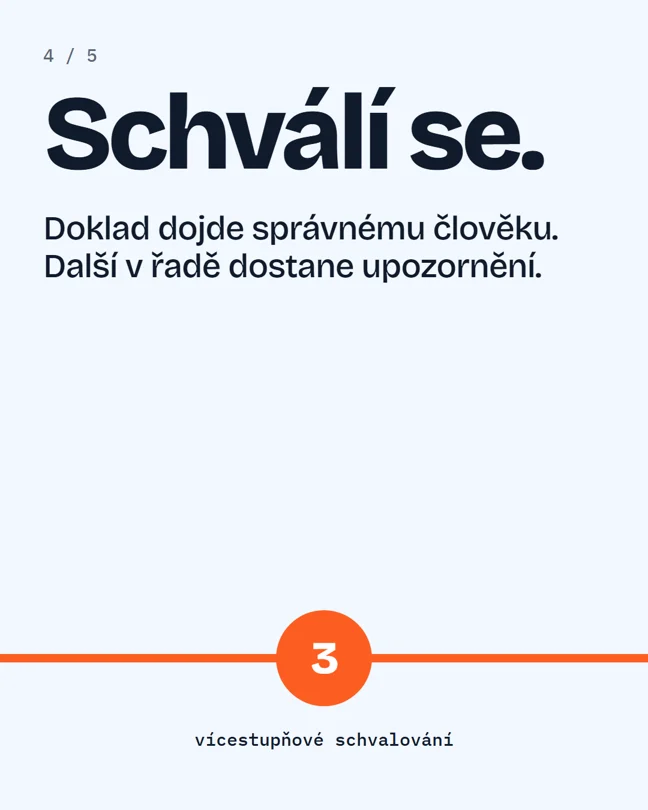
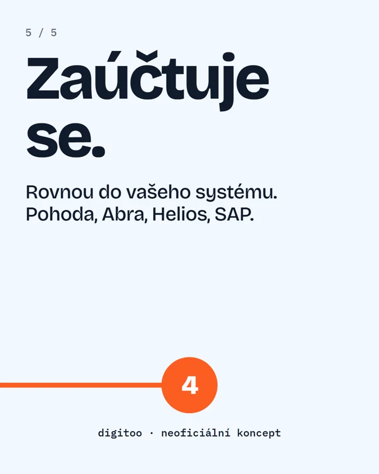
Promo video: 20 s, 120 BPM
Střih i zvuk sedí na stejnou mřížku. Rychlé údery kopírují rutinu, po slově „Stop“ přijde ticho a každý nalezený údaj má vlastní tón.
Animaci jsem napsal v HTML a vyrenderoval po snímcích. Zvuk je generovaný skriptem, takže video nepotřebuje žádnou licencovanou hudbu.
Digital
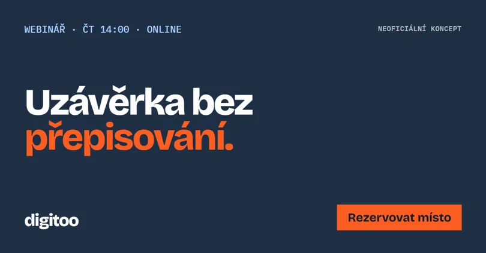
00:00:24:00 · 02 · Motion design a střih
Anime edity z vlastního enginu
Osobní projekt, ne komerční zakázka. Engine vezme epizodu a píseň, najde drop, střihá do beatu a přidává efekty, typografii i zvuk.
- 76 493
- zhlédnutí
- 103
- videí na YouTube
- 4
- kanály
- 0,67 USD
- cloudový render 12 editů
Zhlédnutí, videa a kanály: stav k 21. 10. 2026 z vlastního dashboardu. Zatím malé publikum (59 odběratelů), hlavně testovací data pro další verze.
Anime záběry a hudba patří jejich vlastníkům. Fanouškovský projekt, videa jsou přehrávaná přímo z YouTube.
00:00:36:00 · 03 · AI workflow
AI tam, kde šetří čas. Rozhodnutí u člověka.
- AnalýzaSkript rozdělí video na záběry a píseň na beaty a dropy.
- AI tříděníModel označí postavy a typ záběru. Tady AI šetří nejvíc ruční práce.
- PlánVzniká čitelný JSON plán, který jde upravit ručně.
- RenderEfekty, text a zvuk doplní lokální kód, náročné dávky běží v cloudu.
- KontrolaVarianty porovnávám naslepo. Co neprojde, se nepublikuje.
- DataPublikace je naplánovaná a dashboard sleduje výsledky.
Python, přes 160 skriptů. Stejný přístup je použitelný i pro firemní obsah: šablona, datový zdroj, dávkový export, kontrola.
Herní vizuály z FolkIdle: generování je jen začátek
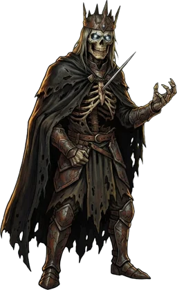
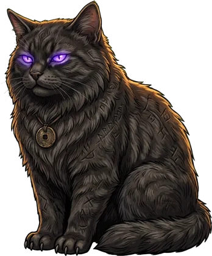
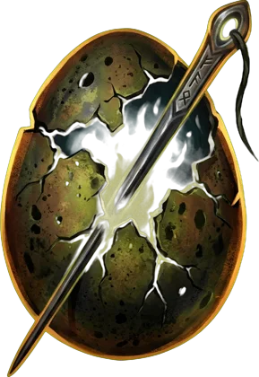
FolkIdle je moje idle RPG ze slovanského folklóru. Vizuály vznikají přes AI na klíčovacím pozadí. Pak je ořezávám, sjednocuji a vracím, když nesedí se zbytkem hry.
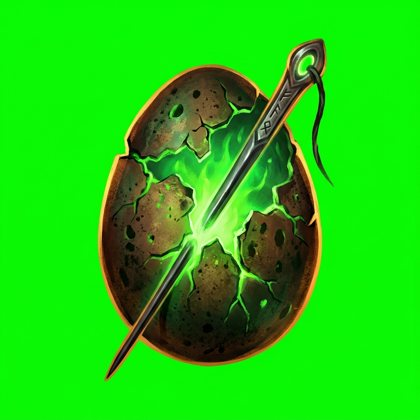
00:00:48:00 · 04 · Grafika pro reálný provoz
Atletický oddíl: pravidelný obsah s termínem
Pro TJ Jiskra Nový Bor dělám grafiky a videa ze závodů. Výřezy závodníků skládám do lokace závodu v GIMPu a střihám v DaVinci Resolve.
Opakovanou práci jsem převedl na skript: z jednoho JSON souboru vznikne výsledkové video s kartami, přechody a střihem na hudbu. Sezónní varianta se pak dělá výměnou stylu.
Ukázky tady nezveřejňuji, protože jsou na nich závodníci včetně dětí.
00:01:00:00 · 05 · Spolupráce
Jak bych pracoval
Systém
Nejdřív šablony a pravidla, aby další výstupy byly rychlejší a konzistentní.
Data
Sledovat, co funguje, a podle toho upravovat další sérii.
Vlastní nápady
Nečekat jen na zadání. Přinášet koncepty, které značku posouvají.
Nástroje
GIMP · DaVinci Resolve · Python · HTML/CSS · Blender (přes AI agenta) · generativní AI · Claude Code. Figmu se teprve učím.